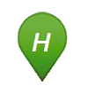

farmshops.eu - Hofladen Karte
Diese Webseite ist noch im Aufbau und wird sich in den nächsten Wochen immer wieder verändern. Über Feedback, Ideen und Tipps freuen wir uns.
Was ist das hier?
Diese Karte zeigt Hofläden und Milch,- Eier- oder Essensautomaten, die auf openstreetmap.org eingetragen sind und bereitet die Daten optisch auf. Fehlende Daten oder neue Höfe kann man direkt auf OpenStreetMap eintragen. Die Daten werden von dort regelmäßig abgeglichen.
Welche Einträge von Openstreetmap werden hier angezeigt?
Nur Orte mit folgenden Tags werden überhaupt angezeigt:
 shop=farm für Hofläden
amenity=vending_machine für Verkaufsautomaten, jedoch nur mit:
- vending=food Für Essen
- vending=milk Für Milchautomaten
- Außerdem auch vending=eggs
amenity=marketplace für Wochenmärkte
Von all diesen Orte werden falls vorhanden alle weiteren Daten wie die Adresse oder die Öfnungszeiten im Popup angezeigt, wobei unbekante Tags in der Tabelle landen und teilweise Begriffe übersetzt werden.
Folgende Tags werden im Popup formatiert dargestellt:

Eine detailierter Anleitung folgt hier noch.
Wie häufig werden die Daten abgeglichen und welchen Stand haben sie jetzt gerade?
Momentan werden die Daten mit einem Script manuell in regelmäßigen Abständen™ abgeglichen. Ein automatischer Abgleich ist geplant.
Wie erreiche ich euch?
- Auf der Webseite von Code for Karlsruhe gibt es Kontaktdaten und Infos zu den regelmäßigen Treffen.
- Den Quellcode und technische Planung gibt es auf GitHub
- Stefan Grotz koordiniert das Projekt und kann auch direkt angeschrieben werden.
Was ist mit Wochenmärkten oder wilden Kräutern?
Diese Karte konzentriert sich auf Hofläden, Automaten und Wochenmärkte. Diese Seiten könnten Dir aber weiter helfen:- Genaue Daten zu Wochenmärkten findet man bequem für viele Städte auf wo-ist-markt.de.
- Kräuter und andere öffentlich zugängliche Nahrungsmittel findet man auf mundraub.org
Impressum und Datenschutz

farmshops.eu ist ein Projekt von Code for Karlsruhe. Die Karte bereitet Daten von Openstreetmap optisch auf und hilft bei der Pflege. Wir speichern keinerlei Daten über unsere Benutzer und erheben keine Statistik über die Zugriffe auf die Seite. Die Seite ist auf den Servern von github.com gehostet.
Diese Seite befindet sich momentan noch im Aufbau, ein ausführlicheres Impressum folgt bald.